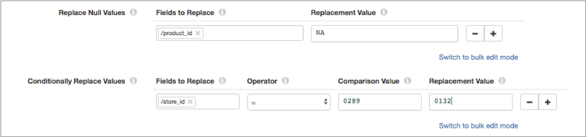
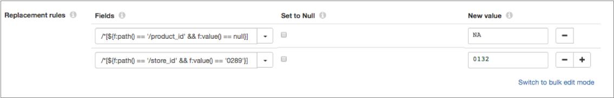

Post Upgrade Tasks
In some situations, you must complete tasks within Data Collector or your Control Hub on-premises installation after you upgrade.
Update Control Hub On-premises
If you use StreamSets Control Hub on-premises and you upgrade registered Data Collectors to a version higher than your current version of Control Hub, you must modify the Data Collector version range within your Control Hub installation.
By default, Control Hub can work with registered Data Collectors from version 2.1.0.0 to the current version of Control Hub. You can customize the Data Collector version range. For example, if you use Control Hub on-premises version 3.1.0 and you upgrade registered Data Collectors to version 3.4.0, you must configure the maximum Data Collector version that can work with Control Hub to version 3.4.0.
To modify the Data Collector version range:
- Log in to Control Hub as the default system administrator - the admin@admin user account.
- In the Navigation panel, click .
- Click the Component Version Range icon:
 .
. - Enter 3.4.0 as the maximum Data Collector version that can work with Control Hub.
Update Pipelines to Use Spark 2.1 or Later
With version 3.3.0, Data Collector removes support for Spark 1.x and introduces cluster streaming mode with support for Kafka security features such as SSL/TLS and Kerberos authentication using Spark 2.1 or later and Kafka 0.10.0.0 or later. For more information about these changes, see Upgrade to Spark 2.1 or Later.
After upgrading the Cloudera CDH distribution, Hortonworks Hadoop distribution, or Kafka system to the required version and then upgrading Data Collector, you must update pipelines to use Spark 2.1 or later. Pipelines that use the earlier systems will not run until you perform these tasks:
- Install the stage library for the upgraded system.
- In the pipeline, edit the stage and select the appropriate stage library.
- If the pipeline includes a Spark Evaluator processor and the Spark application was
previously built with Spark 2.0 or earlier, rebuild it with Spark 2.1.
Or if you used Scala to write the custom Spark class, and the application was compiled with Scala 2.10, recompile it with Scala 2.11.
- If the pipeline includes a Spark executor and the Spark application was previously built with Spark 2.0 or earlier, rebuild it with Spark 2.1 and Scala 2.11.
Update Value Replacer Pipelines
With version 3.1.0.0, Data Collector introduces a new Field Replacer processor and has deprecated the Value Replacer processor.
The Field Replacer processor lets you define more complex conditions to replace values. For example, unlike the Value Replacer, the Field Replacer can replace values that fall within a specified range.
You can continue to use the deprecated Value Replacer processor in pipelines. However, the processor will be removed in a future release - so we recommend that you update pipelines to use the Field Replacer as soon as possible.
To update your pipelines, replace the Value Replacer processor with the Field Replacer processor. The Field Replacer replaces values in fields with nulls or with new values. In the Field Replacer, use field path expressions to replace values based on a condition.
For example, let's say that your Value Replacer processor is configured to replace null values in the product_id field with "NA" and to replace the "0289" store ID with "0132" as follows:

In the Field Replacer processor, you can configure the same replacements using field path expressions as follows:

Update Einstein Analytics Pipelines
With version 3.1.0.0, the Einstein Analytics destination introduces a new append operation that lets you combine data into a single dataset. Configuring the destination to use dataflows to combine data into a single dataset has been deprecated.
You can continue to configure the destination to use dataflows. However, dataflows will be removed in a future release - so we recommend that you update pipelines to use the append operation as soon as possible.
Update Pipelines using Legacy Stage Libraries
- Use a current stage library
- We strongly recommend that you upgrade your system and use a current stage
library in the pipeline:
- Upgrade the system to a more current version.
- Install the stage library for the upgraded system.
- In the pipeline, edit the stage and select the appropriate stage library.
- Install the legacy library
- Though not recommended, you can still download and install the older stage libraries as custom stage libraries. For more information, see Legacy Stage Libraries.
Disable Cloudera Navigator Integration
With version 3.0.0.0, the beta version of Cloudera Navigator integration is no longer available with Data Collector. Cloudera Navigator integration now requires a paid subscription. For more information about purchasing Cloudera Navigator integration, contact us.
When upgrading from a Data Collector version with Cloudera Navigator integration enabled to version 3.0.0.0 without a paid subscription, perform the following post-upgrade task:
- lineage.publishers
- lineage.publisher.navigator.def
- All other properties with the lineage.publisher.navigator prefix
JDBC Multitable Consumer Query Interval Change
With version 3.0.0.0, the Query Interval property is replaced by the new Queries per Second property.
Queries per Second = Number of Threads / Query Interval (in seconds)The upgrade would occur the same way if Query Interval were set to 15.
Pipelines with a Query Interval configured to use other units of time, such as ${.1 *MINUTES}, or configured with a different expression format, such as ${SECONDS * 5}, are upgraded to use the default for Queries per Second, which is 10. This means the pipeline will run a maximum of 10 queries per second. The fact that these expressions are not upgraded correctly is noted in the Data Collector log.
If necessary, update the Queries per Second property as needed after the upgrade.
Update JDBC Query Consumer Pipelines used for SQL Server CDC Data
With version 3.0.0.0, the Microsoft SQL Server CDC functionality in the JDBC Query Consumer origin has been deprecated and will be removed in a future release.
- To read data from Microsoft SQL Server CDC tables, use the SQL Server CDC Client origin.
- To read data from Microsoft SQL Server change tracking tables, use the SQL Server Change Tracking origin.
Update MongoDB Destination Upsert Pipelines
With version 3.0.0.0, the MongoDB destination supports the replace and update operation codes, and no longer supports the upsert operation code. You can use a new Upsert flag in conjunction with Replace and Update.
After upgrading from a version earlier than 3.0.0.0, update the pipeline as needed to ensure that records passed to the destination do not use the upsert operation code (sdc.operation.type = 4). Records that use the upsert operation code will be sent to error.
In previous releases, records flagged for upsert were treated in the MongoDB system as Replace operations with the Upsert flag set.
- Configure the pipeline to use the Replace operation code.
Make sure that the sdc.operation.type is set to 7 for Replace instead of 4 for Upsert.
- In the MongoDB destination, enable the new Upsert property.
Time Zones in Stages
With version 3.0.0.0, time zones have been organized and updated to use JDK 8 names. This should make it easier to select time zones in stage properties.
In the rare case that an upgraded pipeline uses a format not supported by JDK 8, edit the pipeline to select a compatible time zone.
Update Kudu Pipelines
Consider the following upgrade tasks for Kudu pipelines, based on the version that you are upgrading from:
- Upgrade from versions earlier than 3.0.0.0
- With version 3.0.0.0, if the destination receives a change data capture log from the following source systems, you must specify the source system so that the destination can determine the format of the log: Microsoft SQL Server, Oracle CDC Client, MySQL Binary Log, or MongoDB Oplog.
- Upgrade from versions earlier than 2.2.0.0
- With version 2.2.0.0, Data Collector provides support for Apache Kudu version 1.0.x and no longer supports earlier
Kudu versions. To upgrade pipelines that contain a Kudu destination from Data Collector versions earlier than 2.2.0.0, upgrade your Kudu cluster and then add a stage
alias for the earlier Kudu version to the Data Collector configuration file,
$SDC_CONF/sdc.properties.
Update JDBC Multitable Consumer Pipelines
With version 2.7.1.1, the JDBC Multitable Consumer origin can now read from views in addition to tables. The origin now reads from all tables and all views that are included in the defined table configurations.
When upgrading pipelines that contain a JDBC Multitable Consumer origin from Data Collector versions earlier than 2.7.1.1, review the table configurations to determine if any views are included. If a table configuration includes views that you do not want to read, simply exclude them from the configuration.
Update Vault Pipelines
With version 2.7.0.0, Data Collector introduces a credential store API and credential expression language functions to access Hashicorp Vault secrets.
In addition, the Data Collector Vault integration now relies on Vault's App Role authentication backend.
Previously, Data Collector used Vault functions to access Vault secrets and relied on Vault's App ID authentication backend. StreamSets has deprecated the Vault functions, and Hashicorp has deprecated the App ID authentication backend.
After upgrading, update pipelines that use Vault functions in one of the following ways:
- Use the new credential store expression language functions (recommended)
- To use the new credential functions, install the Vault credential store stage library and define the configuration properties used to connect to Vault. Then, update each upgraded pipeline that includes stages using Vault functions to use the new credential functions to retrieve the credential values.
- Continue to use the deprecated Vault functions
- You can continue to use the deprecated Vault functions in pipelines. However, the functions will be removed in a future release - so we recommend that you use the credential functions as soon as possible.
Configure JDBC Producer Schema Names
With Data Collector version 2.5.0.0, you can use a Schema Name property to specify the database or schema name. In previous releases, you specified the database or schema name in the Table Name property.
Upgrading from a previous release does not require changing any existing configuration at this time. But we recommend using the new Schema Name property, since the ability to specify a database or schema name with the table name might be deprecated in the future.
Evaluate Precondition Error Handling
With Data Collector version 2.5.0.0, precondition error handling has changed.
The Precondition stage property allows you to define conditions that must be met for a record to enter the stage. Previously, records that did not meet all specified preconditions were passed to the pipeline for error handling. That is, the records were processed based on the Error Records pipeline property.
With version 2.5.0.0, records that do not meet the specified preconditions are handled by the error handling configured for the stage. Stage error handling occurs based on the On Record Error property on the General tab of the stage.
Review pipelines that use preconditions to verify that this change does not adversely affect the behavior of the pipelines.
Authentication for Docker Image
With Data Collector
version 2.4.1.0, the Docker image now uses the form type of file-based authentication by
default. As a result, you must use a Data Collector
user account to log in to the Data Collector.
If you haven't set up custom user accounts, you can use the admin account shipped with
the Data Collector. The default login is: admin / admin.
Earlier versions of the Docker image used no authentication.
Configure Pipeline Permissions
Data Collector version 2.4.0.0 is designed for multitenancy and enables you to share and grant permissions on pipelines. Permissions determine the access level that users and groups have on pipelines.
In earlier versions of Data Collector without pipeline permissions, pipeline access is determined by roles. For example, any user with the Creator role could edit any pipeline.
In version 2.4.0.0, roles are augmented with pipeline permissions. In addition to having the necessary role, users must also have the appropriate permissions to perform pipeline tasks.
For example, to edit a pipeline in 2.4.0.0, a user with the Creator role must also have read and write permission on the pipeline. Without write permission, the user cannot edit the pipeline. Without read permission, the user cannot see the pipeline at all. It does not display in the list of available pipelines.
In Data Collector version 2.5.0.0, pipeline permissions are disabled by default. To enable pipeline permissions, set the pipeline.access.control.enabled property to true in the Data Collector configuration file.
For more information about roles and permissions, see Roles and Permissions. For details about configuring pipeline permissions, see Sharing Pipelines.
Update Elasticsearch Pipelines
Data Collector version 2.3.0.0 includes an enhanced Elasticsearch destination that uses the Elasticsearch HTTP API. To upgrade pipelines that use the Elasticsearch destination from Data Collector versions earlier than 2.3.0.0, you must review the value of the Default Operation property.
Review all upgraded Elasticsearch destinations to ensure that the Default Operation property is set to the correct operation. Upgraded Elasticsearch destinations have the Default Operation property set based on the configuration for the Enable Upsert property:
- With upsert enabled, the default operation is set to INDEX.
- With upsert not enabled, the default operation is set to CREATE which requires a DocumentId.